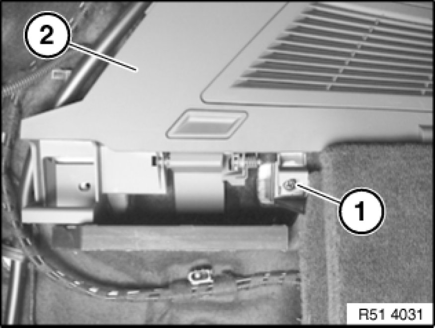
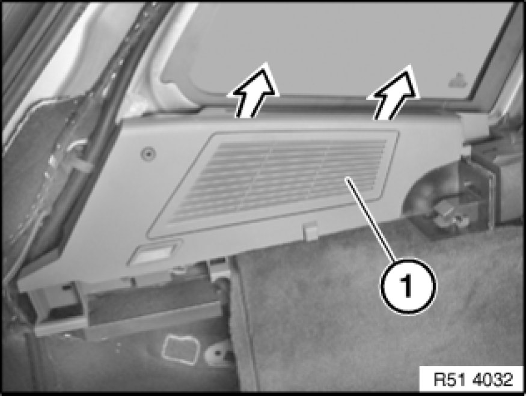
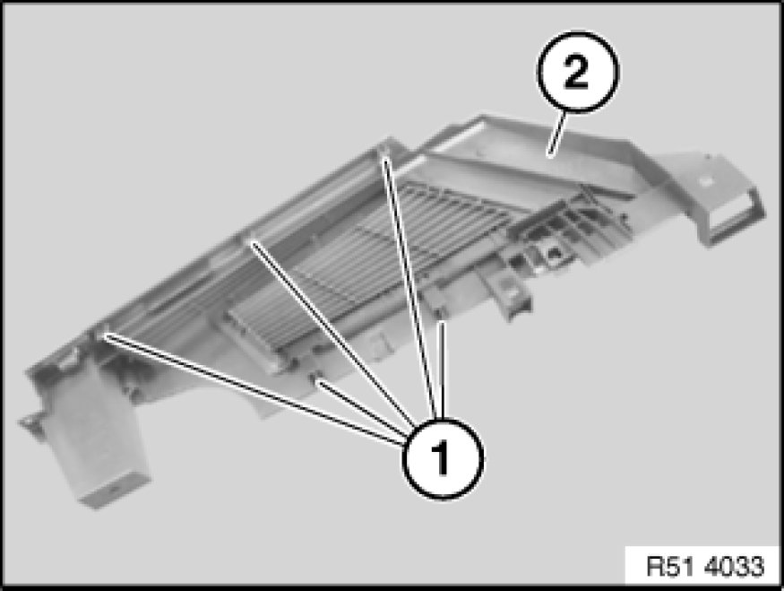

Quarter Window Glass Weatherstrip: Service and Repair
51 37 261 - Removing and installing/replacing window cavity cover strip for door window, rear left or right

Necessary preliminary tasks:
- Remove roller cover for luggage compartment, refer to Owner's Manual
- Fold rear seat backrest forwards
- Remove panel for roof pillar at rear (C-pillar) Removing and Installing/Replacing Trim Panel for Rear Left or Right Roof Pillar
- Remove panel for roof pillar at rear (D-pillar) Pillar Trim
- Release covers on seat belt at top rear Removing and Installing/Replacing Rear Left or Right Seat Belts

Release screw (1) on window cavity cover strip (2).

Remove window cavity cover strip (1) towards top.

Installation:
Guides (1) on window cavity cover strip (2) must not be damaged.